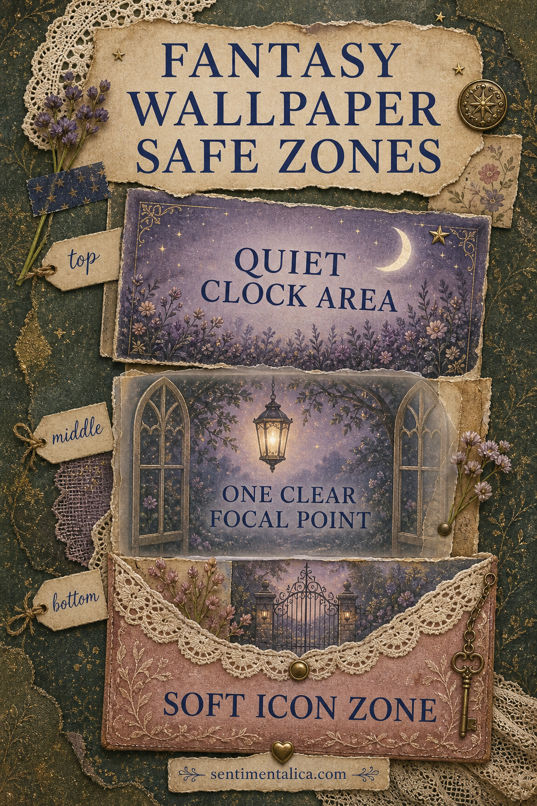
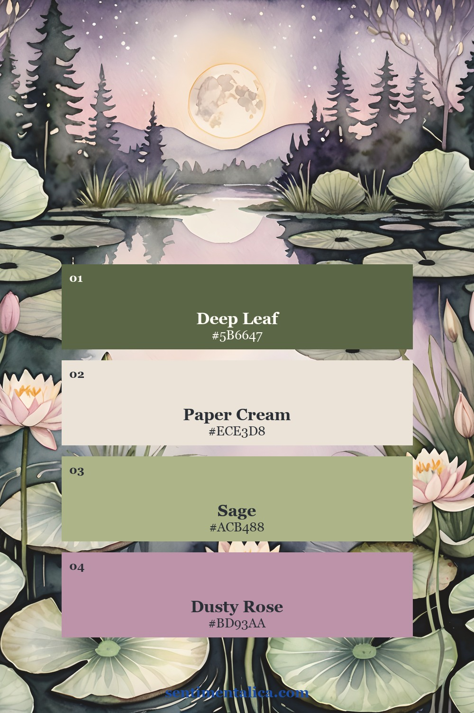
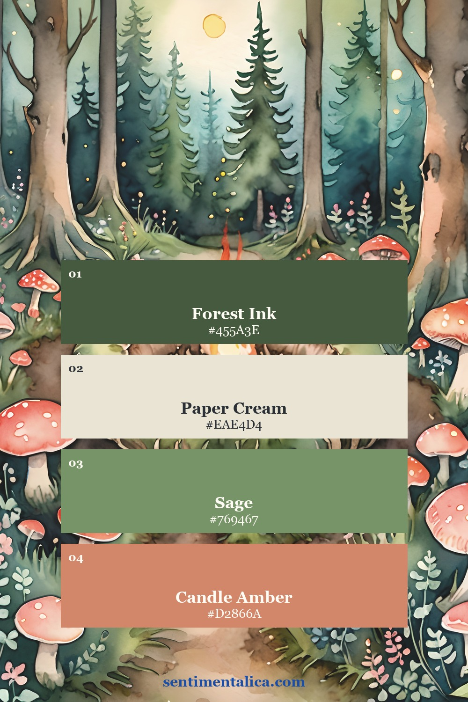
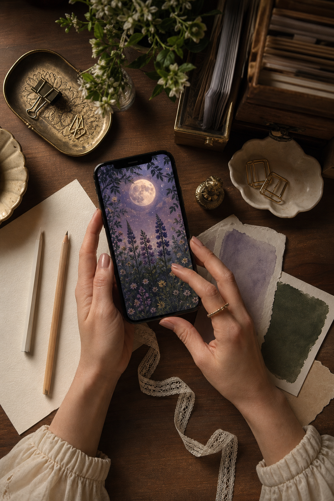
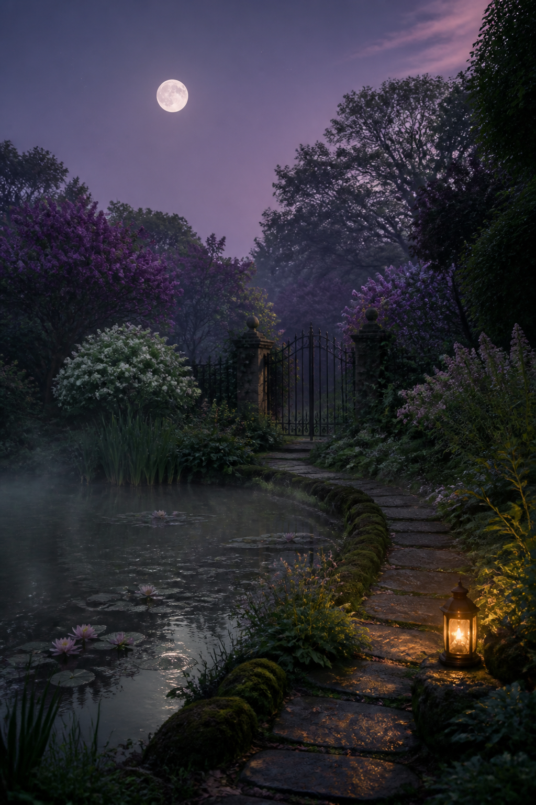
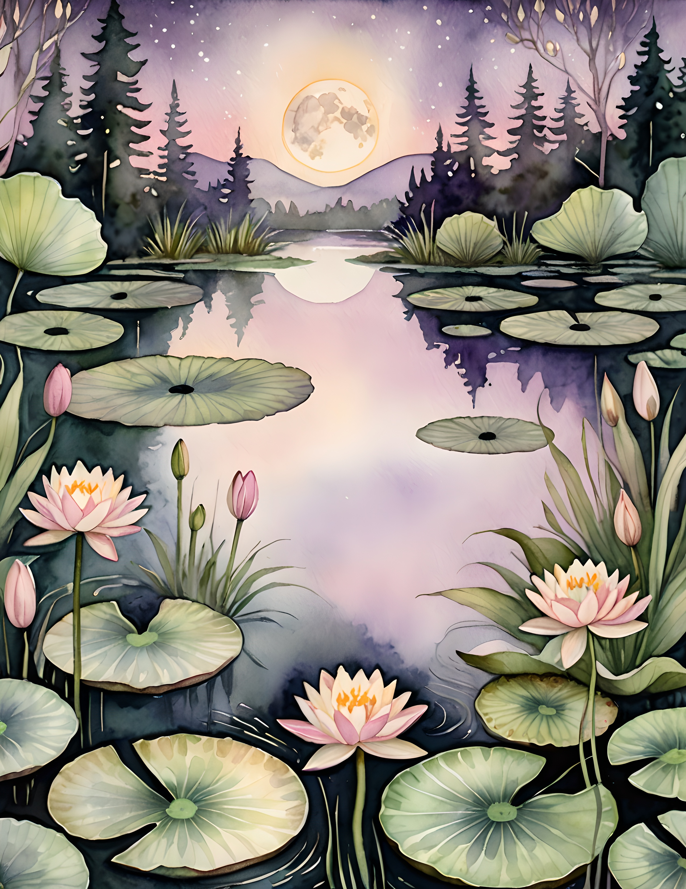
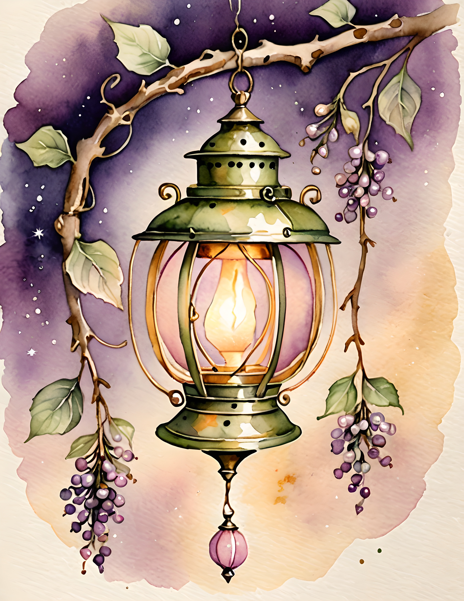
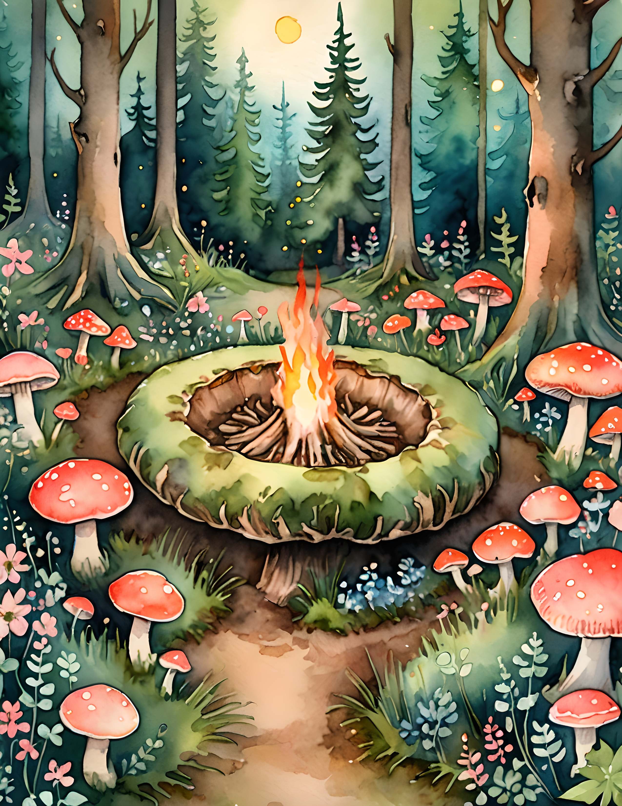

Fantasy wallpaper art can be beautiful in a gallery and frustrating on a phone. The clock disappears into a moon, app names land across a fairy gate, and every notification fights with the details. A good lock screen still feels enchanted, but it also leaves a few calm places for real life. The easiest way to choose one is to look for three useful zones before you fall in love with the picture.

Protect the clock area first
Look at the top quarter of the image. It should contain sky, mist, parchment, water, or another broad area with gentle contrast. Tiny stars are fine. A bright moon directly behind pale numbers is not. If the picture has a strong top detail, try cropping it lower so the clock sits over a quieter patch.
Do not judge the image only in your photo library. Set it as a temporary lock screen and check it in daylight and at night. The best fantasy wallpaper is not necessarily the darkest one. It is the one where the atmosphere survives without making the time difficult to read.
Give the eye one destination
A lantern, garden gate, distant castle, lily pond, or path can become the focal point. Choose one. When five magical objects ask for attention at the same size, the phone starts to feel busy. A single destination creates the feeling that the wallpaper has a story beyond the screen.


Color can help with this hierarchy. Keep most of the scene in moss, parchment, lilac, or deep blue, then reserve one warm accent for the focal object. A small brass lantern reads more clearly than ten equal golden sparks.
Keep the lower screen soft
The bottom of a lock screen often holds shortcuts, notifications, or widgets. Look for blurred foliage, dark water, a simple stone path, or broad leaves rather than fine writing and tiny faces. Detail at the sides is usually easier to live with than detail directly behind controls.

When you crop, move the main subject slightly above or below center. Pinch the image smaller until the useful empty areas appear, then move it only a little. A dramatic crop can remove the very atmosphere you wanted. Save two versions and live with each for a day before deciding.
Let the wallpaper feel like a place
The most satisfying fantasy backgrounds suggest somewhere you could enter. Mist across a pond, warm light beyond a gate, and a path disappearing between trees do more emotional work than a pile of symbols. They also leave more usable negative space.

If you want to make your own phone background from printable art, begin with a portrait page and create a duplicate before cropping. Keep one untouched copy. Use the second to test clock placement, color, and focal point without worrying about losing the original.
Two real directions for an enchanted screen
The pages below show why one fantasy mood can take several forms. Gossamer Fae uses moonlight, water, gates, and glowing objects. Fairy Ring shifts toward mushrooms, woodland paths, and playful forest color. Both can inspire a wallpaper crop, but the first feels dreamy and distant while the second feels warm and close to the ground.



Use the art as a visual starting point, then choose the crop that makes your phone calmer. You can also download the 100 free floral pictures and practise building a simple botanical wallpaper before working with a more detailed fantasy scene.
A useful lock screen does not have to surrender its magic. Protect the clock, choose one destination, and leave the lower screen soft. Then keep the version that still makes you pause when you pick up your phone. Find more gentle creative guides in the Sentimentalica journal.